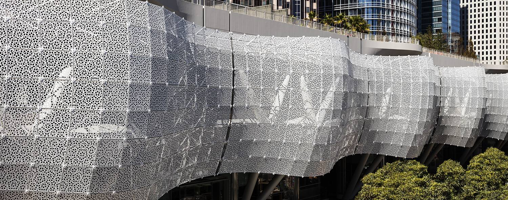

Welder/CNC Operator/Fabricator
Fabrication-focused role building large aluminum components, including work tied to the SalesForce Transit Station shell and soffit sections.
- Welding and CNC fabrication workflow
- Structural part production and finishing
- High-precision manufacturing constraints